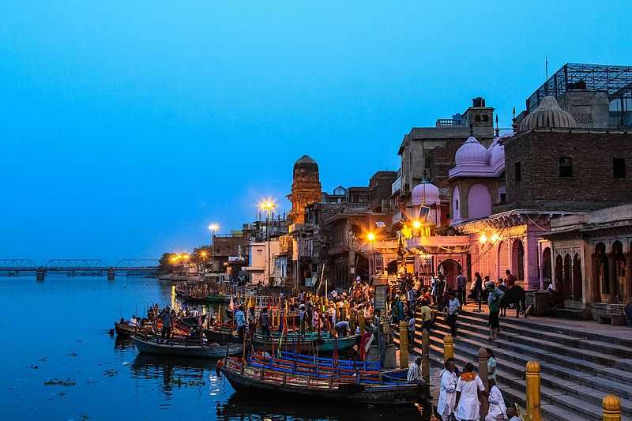

Discover the Beauty of Vishram Ghat
Vishram Ghat is a sacred riverbank in Mathura where the holy river Yamuna meets the ocean. It is believed that taking a dip at Vishram Ghat during the auspicious time of the day, known as Brahma Muhurta, washes away all sins. The ghat is also known for its beautiful sunrise and sunset views, as well as the annual festival of Holi, which is celebrated here.
Visitor Information
- Opening Hours: 5:30 AM to 12:00 PM, 4:00 PM to 8:30 PM
- Entry Fee: Free
- Dress Code: Decent attire (No short dresses or sleeveless shirts)
- Photography: Allowed
- Best Time to Visit: Early morning or evening to avoid the crowd
How to Reach
Vishram Ghat is located in Mathura. You can reach the ghat by taxi, auto-rickshaw, or bus. The ghat is about 1 km from the Mathura bus stand, and there are frequent buses and auto-rickshaws available from the bus stand to the ghat. Alternatively, you can also take a shared auto-rickshaw or hire a private taxi from Mathura to reach Vishram Ghat.